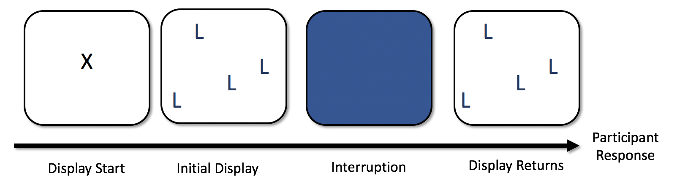

Chapter 4 Organise Functions Walkthrough
The walkthrough here assumes you’re familiar with the basics of eye-tracking and output from DataViewer.
To make things easier, we have collected all of the R code in this section into one file for you to download and look at, which is available in the walkthrough.R file.
4.1 Getting Started
To use events and contingencies, two files will be needed: a fixation report, and a message report. The message report serves as a ‘fool-proof’ way of examining the timings and occurrences of events.4
We begin by loading the fixation report and message report - these are the ones that come pre-packaged with EyeTrackR. It’s a dummy dataset. You can of course replace them with whatever you want.
Next, we begin ‘marking up’ the events, which is why I usually call the file with my organise functions in ORGANISE__Markup.R. The first step is to replace the spaces in any messages with underscores. This is needed as a safety measure because spaces in the event labels can disrupt the process of working out contingencies.
4.2 Descriptives
Now, we can get some descriptive statistics from the message report. This is helpful in getting an understanding of what happened in our dataset. It can also be helpful in highlighting any weird issues that have cropped up.
From that, we get the following - formatted nicely here for easy reading:
| CURRENT_MSG_TEXT | EVENT_COUNT | TIME_MEAN | TIME_MIN | TIME_MAX |
|---|---|---|---|---|
| DISPLAY_START | 15000 | 30.4704 | 26.0000 | 35.000 |
| DISPLAY_CHANGE | 15000 | 255.4810 | 251.0000 | 260.000 |
| BUTTON_PRESS | 15000 | 1137.6133 | 404.4914 | 1982.368 |
The table above, which you get in the console output by running organise.message.descriptives, has some useful information in it that you can use to spot and diagnose any problems with your data.
First, it lists all of the messages it finds in your message report file, in turn, and puts them in the CURRENT_MSG_TEXT column. Then, it gives you a count of how many times each message has been detected in your message report, the mean time each message occurred from the start of each trial, and then, as well as that, the maximum and minimum times each message occurred. There will always be variability in terms of when events occur in a trial, but this does enable you to make sure that, for the most part at least, things happened when they were supposed to.
One thing you can do at this point is a back-of-the-envelope calculation and check to make sure all the trials are there as you would expect. Assuming you know how many participants were in your dataset, and how many trials, you should be able to check to make sure the right number of trials have started (i.e., had a DISPLAY_START message appear). If that’s not the case, then you may need to delve deeper to find why data are missing.
Now that you have checked to make sure things appear as they should - here, we have XYZ participants in our example dataset who took part in XYZ trials, giving us XYZ trials across everyone, which is what is being reported in the table, we can continue.
4.3 Message Markup
Our next step is to begin to markup the fixation report file based on the messages we are interested in. As we talked about above, because fixations can span multiple messages or events, we need to get the information on when each message of interest occurred in each trial. The organise.message.markup function is the start of that process. Let’s run it first then talk about what it does to your fixation report:
# MARKUP FIXATION REPORT
fixationreport <- organise.message.markup(message_df= messagereport,
fixreport_df = fixationreport,
message="DISPLAY_START")
fixationreport <- organise.message.markup(message_df= messagereport,
fixreport_df = fixationreport,
message="DISPLAY_CHANGE")If you now take a look at fixationreport - which I would recommend you do - you’ll now see some new columns have been added. One is called DISPLAY_START and the other is called DISPLAY_CHANGE. If you look closely, what this has done is5:
- Work out when each DISPLAY_START and DISPLAY_CHANGE occurred in each of the trials.
- Take the timings of those messages and then add that information to the fixation report.
This process also gives you some diagnostic information that helps to check for any problems. It compares the number of rows your fixation report had before you marked it up with each new message with what happens to the fixation report after you have marked it up with each new message. If the number of rows are different, that suggests something has gone wrong. Usually this is the case that you have got participants or trials that are missing from either the fixation report or the message report. If you get the following message, then you have nothing to worry about because the dataset has been matched up perfectly:
Difference between input and output rows: 0
4.3.1 Behavioural Markup
We now have two of the major events in each trial marked up into our fixation report. The only thing that is missing is the other main event in each trial: the response made by each participant!
Here, there are two ways to markup the fixation report. If you use a button box, you can use the method here. If you are not using a button box, you’ll need to use the method described in Behavioural Markup (Alternative).
To mark up the fixation report with the timings of each response, as well as the button press of each response, and finally the outcome (correct or incorrect) of each response, we can use organise.responses.markup. This function needs to be fed the fixation report you are using, as well as the column which states what the correct response on each trial is. Here, since the button boxes you can connect to Experiment Builder get given numbers (1-8), the correct response lists the correct numerical value of the button that needs to be pressed on each trial. Let’s run the code:
# NOW DO ACCURACY AND RT MARKUP
fixationreport <- data.table(organise.responses.markup(fixationreport, "CORRECT_RESPONSE"))This function has added the following columns to your fixation report file:
- BUTTON_NUMBER - the button number pressed on that trial.
- OUTCOME - the outcome (‘CORRECT’ or ‘INCORRECT’ of the response).
- RESPONSE_TIME - the time from the start of the trial that the response was made.
It’s worth noting that RESPONSE_TIME isn’t necessarily what you want to use as your Reaction Time measure, since, with this experiment, as in many others, the display doesn’t actually appear for people to look at until DISPLAY_CHANGE. We’ll talk more about this later.
4.3.2 Behavioural Markup (Alternative)
If your participants didn’t use a standard button box, then you need to use a slightly different approach. This is the case if participants responded using a keyboard or a mouse. There are other ways to achieve this, but here is what I would recommend to go for since the approach suggested below fits in with the expected inputs and outputs of other functions that form part of eyeTrackR.
To begin with, what we need to have is a message sent to the message report detailing two things: the time of the response, and the response itself. Suppose that participants here are asked to press the Z key for one response to indicate that they have found a target and the M key for a second response to indicate that they think no targets are present. I would recommend that you set up your experiment software so that when the participants press the Z key, it sends a message at the same time saying ‘RESPONSE_PRESENT’ and so that when participants press the M key, it sends a message at the same time saying ‘RESPONSE_ABSENT’. This can be acheived in Experiment Builder by creating two keyboard triggers, one for Z and one for M, and setting them up to send the appropriate RESPONSE_PRESENT or RESPONSE_ABSENT message the moment the keyboard is pressed. That way, you’ll get messages sent at the right time (the moment the keyboard is pressed) and with the right information.
Now, if you do this, you’ll get either a RESPONSE_PRESENT or RESPONSE_ABSENT message appearing in each trial. You’ll also have the responses logged directly into the message report. To work with this approach, rather than using organise.responses.markup as in the above example that focused on button boxes, you need instead to mark up trials as follows:
fixationreport <- organise.message.markup(message_df=messagereport,
fixreport_df = fixationreport, message="KEYBOARD_PRESENT")
fixationreport <- organise.message.markup(message_df=messagereport,
fixreport_df = fixationreport, message="KEYBOARD_ABSENT")By doing so, you’ll end up with two new columns in fixationreport. One will say KEYBOARD_PRESENT, and the other will say KEYBOARD_ABSENT. These will represent the time at which participants pressed either the Z key or the M key.
The final steps are to mimic the function of organise.responses.markup by using the code below. This creates a RESPONSE column and sets it to ‘PRESENT’ when the KEYBOARD_PRESENT column is not set to NA. The KEYBOARD_PRESENT column is not set to NA on trials where the present key was pressed. It then does the same for the KEYBOARD_ABSENT column and absent responses. Next, it creates the OUTCOME column and sets this to ‘CORRECT’ on trials where the RESPONSE column matches the PRESENCE column. Here, we’re assuming that PRESENCE says either ‘PRESENT’ or ‘ABSENT’, representing the two trial types. Finally, it sets the RESPONSE_TIME column which organise.responses.markup would normally have set up.
# HERE WE ASSUME THAT fixationreport IS A data.table
# WE ALSO ASSUME THAT PRESENCE LISTS 'PRESENT' OR 'ABSENT' DEPENDING ON THE
# TRIAL TYPE
fixationreport[is.na(KEYBOARD_PRESENT)==F,RESPONSE:='PRESENT',]
fixationreport[is.na(KEYBOARD_ABSENT)==F,RESPONSE:='ABSENT',]
fixationreport[PRESENCE==RESPONSE,OUTCOME:='CORRECT',]
fixationreport[PRESENCE!=RESPONSE,OUTCOME:='INCORRECT',]
fixationreport[is.na(KEYBOARD_ABSENT)==F,RESPONSE_TIME:=KEYBOARD_ABSENT,]
fixationreport[is.na(KEYBOARD_PRESENT)==F,RESPONSE_TIME:=KEYBOARD_PRESENT,]4.4 Fixation Contingencies
We now know at what point in each trial each of the three major events occurred- the DISPLAY_START events, the DISPLAY_CHANGE events, and the RESPONSE_TIME events. We know what button participants pressed, and we know if they were right or wrong in each trial. The final step now is to markup the fixation contingencies. Again, these are important in helping us be sure that we’ve included what we want to include when it comes to analysing our eye-tracking data.
To get going with this, we need to use the organise.message.fix_contingencies function. You need to feed this function the fixation report you’re using, as well as a list of the messages you want to mark up in terms of your contingencies. Note that you don’t need to include all the messages here, just the ones you’re interested in. Let’s run it as follows:
# NOW MARK UP FIXATION CONTINGENCIES
fixationreport<-organise.message.fix_contingencies(fixationreport,
list("DISPLAY_START",
"DISPLAY_CHANGE",
"RESPONSE_TIME"))## DISPLAY_START## DISPLAY_CHANGE## RESPONSE_TIMEIf you now look at your fixation report, a bunch of new columns have been added to it. They are as follows:
WITHIN_PRE_DISPLAY_START - this lets you know if a given fixation started before the first message you were interested in. In this case, the first message we were interested in is DISPLAY__START, so this column is helpful in letting us focus in on fixations that occurred before even the fixation cross came up. You might be wondering how there can possibly be any time before the fixation cross which literally starts the trial, but in fact, the eye-tracker actually turns on for a little while before the display comes up. Any fixation labelled as TRUE under WITHIN_PRE_DISPLAY_START began before the fixation cross came up.
WITHIN_DISPLAY_START - this lets you know if a given fixation was occuring when the DISPLAY_START message came up. The cells say TRUE if that is the case and FALSE if not.
WITHIN_DISPLAY_CHANGE - this lets you know if a given fixation was occuring when the DISPLAY_CHANGE message came up. The cells say TRUE if that is the case and FALSE if not.
WITHIN_RESPONSE_TIME - this lets you know if a given fixation was occuring when the RESPONSE_TIME message came up. The cells say TRUE if that is the case and FALSE if not.
FIXATION_CONTINGENCY - this is the most important column added by the organise.message.fix_contingencies function. It pastes together all of the message names that each fixation spanned.
Let’s give some more detailed examples of how to interepret the important FIXATION_CONTINGENCY column. It’ll help if we begin by looking at the final columns of the fixation report after organise.message.fix_contingencies has been run:
| WITHIN_PRE_DISPLAY_START | WITHIN_DISPLAY_START | WITHIN_DISPLAY_CHANGE | WITHIN_RESPONSE_TIME | FIXATION_CONTINGENCY |
|---|---|---|---|---|
| TRUE | TRUE | FALSE | FALSE | PRE_DISPLAY_START__DISPLAY_START |
| FALSE | TRUE | FALSE | FALSE | DISPLAY_START |
| FALSE | TRUE | TRUE | FALSE | DISPLAY_START__DISPLAY_CHANGE |
| FALSE | FALSE | TRUE | FALSE | DISPLAY_CHANGE |
| FALSE | FALSE | TRUE | FALSE | DISPLAY_CHANGE |
| FALSE | FALSE | TRUE | FALSE | DISPLAY_CHANGE |
| FALSE | FALSE | TRUE | FALSE | DISPLAY_CHANGE |
| FALSE | FALSE | TRUE | FALSE | DISPLAY_CHANGE |
| FALSE | FALSE | TRUE | TRUE | DISPLAY_CHANGE__RESPONSE_TIME |
Browsing through these, you may have already worked out what FIXATION_CONTINGENCY really does. Let’s give some examples:
The fixation in the first row began before DISPLAY_START and then ended during the period of time when the fixation cross was up. For that reason it gets a contingency of PRE_DISPLAY_START__DISPLAY_START.
The fixation in the second row began when the fixation cross was up, and ended when the fixation cross was up, giving it a contingency of DISPLAY_START.
The fixation in the third row began when the fixation cross was up, and ended when the main search array was visible. For that reason, it gets a contingency of DISPLAY_START__DISPLAY_CHANGE.
The next five fixations began and ended when the search array was visible, so they get a contingency of DISPLAY_CHANGE.
The final fixation began when the search array was visible, and ended when the response was made. For that reason, this fixation gets a contingency of DISPLAY_CHANGE____RESPONSE_TIME.
With the fixation report marked up in this manner, you can then, at a later point, be careful in how you select your data down to focus only on the trials and/or fixations that you are definitely interested in.
4.5 Behavioural Data
You already have the responses, outcomes and reaction times marked up for each trial at this point. But one problem is that these will require some work to convert to, say, mean accuracy rates. This is because the fixation report has one row per fixation, rather than one row per trial. Therefore, if you want the mean accuracy rate for your participants, you’ll need to crunch the data down to one row per trial before computing your means.
Fortunately, eyeTrackR can do this for you! Our first step in doing this is to work out the TRUE_RT column. This is as follows:
This subtracts the display start time from the response time, to enable us to focus just on the time that we are interested in.
Next, you just need to run analyse.behavioural.data, feed it the fixation report, and the list of columns you want to aggregate by (using the aggregation_column_list input). Here, in the example below, the output is saved to the behaviouralData data.table.
behaviouralData <- analyse.behavioural.data(fixationreport,
aggregation_column_list = list('TRIALTYPE_TEXT'))The behaviouralData table looks like this:
| RECORDING_SESSION_LABEL | TRIALTYPE_TEXT | MEDIAN_RT | MEAN_RT | CORRECT_COUNT | TOTAL_TRIALS | ACCURACY |
|---|---|---|---|---|---|---|
| 1 | YES | 1157.400 | 1185.641 | 1423 | 2449 | 0.5810535 |
| 1 | NO | 1250.787 | 1183.069 | 1012 | 2473 | 0.4092196 |
| 2 | YES | 1250.100 | 1220.968 | 1196 | 2509 | 0.4766839 |
| 2 | NO | 1285.536 | 1252.586 | 1136 | 2579 | 0.4404808 |
| 3 | YES | 1229.856 | 1184.251 | 1281 | 2408 | 0.5319767 |
| 3 | NO | 1223.563 | 1205.574 | 1142 | 2502 | 0.4564349 |
| 4 | YES | 1216.778 | 1198.994 | 1239 | 2475 | 0.5006061 |
| 4 | NO | 1427.213 | 1304.166 | 1280 | 2563 | 0.4994147 |
| 5 | YES | 1329.680 | 1248.196 | 1254 | 2509 | 0.4998007 |
| 5 | NO | 1226.644 | 1177.300 | 1214 | 2442 | 0.4971335 |
| 6 | YES | 1268.918 | 1228.710 | 1327 | 2562 | 0.5179547 |
| 6 | NO | 1252.378 | 1209.104 | 1124 | 2462 | 0.4565394 |
| 7 | YES | 1171.000 | 1156.252 | 1304 | 2438 | 0.5348646 |
| 7 | NO | 1239.448 | 1208.071 | 1133 | 2450 | 0.4624490 |
| 8 | YES | 1271.286 | 1227.473 | 1295 | 2498 | 0.5184147 |
| 8 | NO | 1291.235 | 1256.557 | 1283 | 2580 | 0.4972868 |
| 9 | YES | 1392.445 | 1323.624 | 1310 | 2587 | 0.5063780 |
| 9 | NO | 1149.848 | 1130.382 | 1014 | 2392 | 0.4239130 |
| 10 | YES | 1323.778 | 1242.543 | 1150 | 2491 | 0.4616620 |
| 10 | NO | 1343.560 | 1259.842 | 1357 | 2568 | 0.5284268 |
| 11 | YES | 1252.289 | 1233.529 | 1189 | 2476 | 0.4802100 |
| 11 | NO | 1291.085 | 1256.649 | 1324 | 2563 | 0.5165821 |
| 12 | YES | 1286.929 | 1237.908 | 1282 | 2537 | 0.5053212 |
| 12 | NO | 1272.208 | 1230.583 | 1277 | 2557 | 0.4994134 |
| 13 | YES | 1228.433 | 1206.480 | 1225 | 2425 | 0.5051546 |
| 13 | NO | 1201.048 | 1149.940 | 1068 | 2476 | 0.4313409 |
| 14 | YES | 1214.384 | 1162.218 | 1061 | 2438 | 0.4351928 |
| 14 | NO | 1287.243 | 1235.081 | 1273 | 2624 | 0.4851372 |
| 15 | YES | 1184.089 | 1161.135 | 1063 | 2462 | 0.4317628 |
| 15 | NO | 1262.098 | 1221.638 | 1358 | 2489 | 0.5456006 |
| 16 | YES | 1281.403 | 1229.739 | 1256 | 2445 | 0.5137014 |
| 16 | NO | 1124.128 | 1132.306 | 1060 | 2475 | 0.4282828 |
| 17 | YES | 1243.181 | 1210.754 | 1298 | 2459 | 0.5278569 |
| 17 | NO | 1248.391 | 1209.368 | 1291 | 2529 | 0.5104784 |
| 18 | YES | 1395.318 | 1289.188 | 1372 | 2532 | 0.5418641 |
| 18 | NO | 1240.013 | 1205.530 | 1255 | 2476 | 0.5068659 |
| 19 | YES | 1223.599 | 1175.338 | 1223 | 2362 | 0.5177815 |
| 19 | NO | 1280.064 | 1216.492 | 1322 | 2547 | 0.5190420 |
| 20 | YES | 1205.162 | 1185.567 | 1285 | 2486 | 0.5168946 |
| 20 | NO | 1324.557 | 1274.230 | 1331 | 2608 | 0.5103528 |
| 21 | YES | 1247.392 | 1206.089 | 1220 | 2416 | 0.5049669 |
| 21 | NO | 1300.559 | 1267.571 | 1384 | 2574 | 0.5376845 |
| 22 | YES | 1280.249 | 1204.834 | 1143 | 2454 | 0.4657702 |
| 22 | NO | 1340.408 | 1260.651 | 1228 | 2507 | 0.4898285 |
| 23 | YES | 1237.279 | 1168.773 | 1282 | 2470 | 0.5190283 |
| 23 | NO | 1259.285 | 1222.358 | 1436 | 2565 | 0.5598441 |
| 24 | YES | 1298.970 | 1227.991 | 1290 | 2504 | 0.5151757 |
| 24 | NO | 1268.487 | 1240.864 | 1316 | 2474 | 0.5319321 |
| 25 | YES | 1229.703 | 1190.179 | 1075 | 2423 | 0.4436649 |
| 25 | NO | 1277.152 | 1238.156 | 1335 | 2566 | 0.5202650 |
| 26 | YES | 1277.503 | 1241.456 | 1313 | 2525 | 0.5200000 |
| 26 | NO | 1223.005 | 1217.925 | 1291 | 2511 | 0.5141378 |
| 27 | YES | 1182.850 | 1185.837 | 1079 | 2383 | 0.4527906 |
| 27 | NO | 1307.262 | 1254.601 | 1144 | 2519 | 0.4541485 |
| 28 | YES | 1229.227 | 1205.312 | 1162 | 2508 | 0.4633174 |
| 28 | NO | 1200.175 | 1168.751 | 1072 | 2513 | 0.4265818 |
| 29 | YES | 1263.412 | 1209.283 | 1208 | 2526 | 0.4782264 |
| 29 | NO | 1240.007 | 1179.010 | 1128 | 2472 | 0.4563107 |
| 30 | YES | 1226.636 | 1201.704 | 1093 | 2443 | 0.4474007 |
| 30 | NO | 1232.063 | 1201.976 | 1120 | 2528 | 0.4430380 |
Note a few useful columns in that table to help you back-calculate and double-check to make sure everything is going ok. You should look through this to be certain. Is there the right number of trials? The right number of participants? Does it look like anything is missing? Has the accuracy rate been calculated properly? Also, do the reaction times make sense?
Again, the goal here is to help you be certain that there are no problems with your data and catch those problems as early as possible.
4.6 Final Checks
We are almost ready to save our marked-up fixation report. It’s worth at this point to suggest running some checks on our data. Have a go at running the organise.checks.random_trial function. This is a simple one - the function does, in fact, do nothing at all to your code. All it does it pick, from a random trial and participant, the fixations from that trial and display them in the console for you. You can repeatedly run this function to inspect all sorts of trials to make sure that any code you have run on your data makes sense and has worked how you think it should have done.
I can’t tell you the number of times I have thought things were working as they should, but then this function has shown me the error of my ways! This is particularly worth running multiple times for eye-tracking datasets since they can often be huge (hundreds of thousands of fixations), making it virtually impossible to conduct a visual inspection of everything.
Next, we can get descriptive and summary statistics of the contingencies. Here’s what we have for our current fixationreport:
That will give a table that looks like this:
| FIXATION_CONTINGENCY | FIXATION_COUNT |
|---|---|
| PRE_DISPLAY_START__DISPLAY_START | 15000 |
| DISPLAY_START | 10872 |
| DISPLAY_START__DISPLAY_CHANGE | 15000 |
| DISPLAY_CHANGE | 93861 |
| DISPLAY_CHANGE__RESPONSE_TIME | 15007 |
| RESPONSE_TIME | 44 |
It tells you how many instances of each fixation contingency have been found. It also tells you how many fixations haven’t been set to a contingency. If you see a row that says ‘UNCLASSIFIED’, this is the count of fixations that have not had a contingency assigned to them.
4.7 Removing Trials
Our final steps focus on cleaning the dataset. We do this in two ways: * We remove trials that missed important events, such as display changes or responses * We remove fixations that were outliers, i.e., those that were too long or too short
Ideally, the first step of this process should remove zero trials for the simple reason that, in most experiments, we should have the same series of events in each trial. Again, this serves as a health check of our dataset to ensure that everything has worked as it should.
4.7.1 Removing Trials with Missing Events
Let’s begin with the first of our steps in terms of cleaning - removing trials that missed important events. Here, we want to make sure we remove all the trials that lacked the DISPLAY_CHANGE or RESPONSE_TIME messages.
# REMOVE TRIALS THAT LACKED A DISPLAY CHANGE AND/OR A RESPONSE TIME
messageRemovals <- organise.message.removals(fixreport_df=fixationreport,
required_message_list=list("DISPLAY_CHANGE", "RESPONSE_TIME"))
# LOOK AT MESSAGE REMOVALS
print(messageRemovals[[1]])
# GRAB THE FIXATION REPORT WITH TRIALS REMOVED
fixMessagesRemoved <- messageRemovals[[2]]
# THIS SHOWS WE HAVE NO UNCLASSIFIED FIXATIONS, GOOD!
print(organise.contingencies.descriptives(fixMessagesRemoved))In the above code, messageRemovals is a list of data.tables. The first item in the list, accessed using messageRemovals[[1]], gives you details information regarding how many trials, and what percentage of trials was removed for each participant, and why. The second item in the list, accessed using messageRemovals[[2]] is the fixation report data.table which has had all the trials where the specified events of DISPLAY_CHANGE and RESPONSE_TIME didn’t occur removed.
As you can see from messageRemovals[[1]], no trials have been removed because everything happened as it should. Here is what that looks like:
| RECORDING_SESSION_LABEL | TRIAL_TOTAL | TRIAL_COUNT_DISPLAY_CHANGE | TRIAL_COUNT_RESPONSE_TIME | FINAL_TRIAL_COUNT | LOST_TRIALS | LOST_TRIALS_PERC |
|---|---|---|---|---|---|---|
| 1 | 500 | 500 | 500 | 500 | 0 | 1 |
| 2 | 500 | 500 | 500 | 500 | 0 | 1 |
| 3 | 500 | 500 | 500 | 500 | 0 | 1 |
| 4 | 500 | 500 | 500 | 500 | 0 | 1 |
| 5 | 500 | 500 | 500 | 500 | 0 | 1 |
| 6 | 500 | 500 | 500 | 500 | 0 | 1 |
| 7 | 500 | 500 | 500 | 500 | 0 | 1 |
| 8 | 500 | 500 | 500 | 500 | 0 | 1 |
| 9 | 500 | 500 | 500 | 500 | 0 | 1 |
| 10 | 500 | 500 | 500 | 500 | 0 | 1 |
| 11 | 500 | 500 | 500 | 500 | 0 | 1 |
| 12 | 500 | 500 | 500 | 500 | 0 | 1 |
| 13 | 500 | 500 | 500 | 500 | 0 | 1 |
| 14 | 500 | 500 | 500 | 500 | 0 | 1 |
| 15 | 500 | 500 | 500 | 500 | 0 | 1 |
| 16 | 500 | 500 | 500 | 500 | 0 | 1 |
| 17 | 500 | 500 | 500 | 500 | 0 | 1 |
| 18 | 500 | 500 | 500 | 500 | 0 | 1 |
| 19 | 500 | 500 | 500 | 500 | 0 | 1 |
| 20 | 500 | 500 | 500 | 500 | 0 | 1 |
| 21 | 500 | 500 | 500 | 500 | 0 | 1 |
| 22 | 500 | 500 | 500 | 500 | 0 | 1 |
| 23 | 500 | 500 | 500 | 500 | 0 | 1 |
| 24 | 500 | 500 | 500 | 500 | 0 | 1 |
| 25 | 500 | 500 | 500 | 500 | 0 | 1 |
| 26 | 500 | 500 | 500 | 500 | 0 | 1 |
| 27 | 500 | 500 | 500 | 500 | 0 | 1 |
| 28 | 500 | 500 | 500 | 500 | 0 | 1 |
| 29 | 500 | 500 | 500 | 500 | 0 | 1 |
| 30 | 500 | 500 | 500 | 500 | 0 | 1 |
4.7.2 Removing Outlier Fixations
Our final step of the cleaning process is to remove fixations that were too long or too short. The convention I use, and the default set by eyeTrackR, is to remove fixations that were less than 60ms or greater than 1200ms in duration6.
The approach here is very similar to that above. We use organise.exclusions.fix_durations, and feed it a fixation report. Here we are giving it the fixation report after cleaning trials that lacked certain messages. Here’s the code:
# REMOVALS BASED ON FIXATION DURATIONS
durationRemovals <- organise.exclusions.fix_durations(fixreport_df=fixMessagesRemoved)## CURRENT_FIX_DURATION<1200 & CURRENT_FIX_DURATION>60# SUMMARY STATS OF HOW MANY FIXATIONS REMOVED PER PARTICIPANT
durationsRemoved <- durationRemovals[[1]]
# FINAL DATASET WHICH CAN BE ANALYSED
finalDT <- durationRemovals [[2]]In the above example you can take a look at durationsRemoved to get a handle on how many fixations were removed from your fixation report, at a participant level. This can be useful in spotting problems with certain participants or datasets. Let’s take a quick look:
| RECORDING_SESSION_LABEL | FIX_TOTAL | FINAL_FIX_COUNT | LOST_FIXES | LOST_FIXES_PERC |
|---|---|---|---|---|
| 1 | 4922 | 4922 | 0 | 1 |
| 2 | 5088 | 5088 | 0 | 1 |
| 3 | 4910 | 4910 | 0 | 1 |
| 4 | 5038 | 5038 | 0 | 1 |
| 5 | 4951 | 4951 | 0 | 1 |
| 6 | 5024 | 5024 | 0 | 1 |
| 7 | 4888 | 4888 | 0 | 1 |
| 8 | 5078 | 5078 | 0 | 1 |
| 9 | 4979 | 4979 | 0 | 1 |
| 10 | 5059 | 5059 | 0 | 1 |
| 11 | 5039 | 5039 | 0 | 1 |
| 12 | 5094 | 5094 | 0 | 1 |
| 13 | 4901 | 4901 | 0 | 1 |
| 14 | 5062 | 5062 | 0 | 1 |
| 15 | 4951 | 4951 | 0 | 1 |
| 16 | 4920 | 4920 | 0 | 1 |
| 17 | 4988 | 4988 | 0 | 1 |
| 18 | 5008 | 5008 | 0 | 1 |
| 19 | 4909 | 4909 | 0 | 1 |
| 20 | 5094 | 5094 | 0 | 1 |
| 21 | 4990 | 4990 | 0 | 1 |
| 22 | 4961 | 4961 | 0 | 1 |
| 23 | 5035 | 5035 | 0 | 1 |
| 24 | 4978 | 4978 | 0 | 1 |
| 25 | 4989 | 4989 | 0 | 1 |
| 26 | 5036 | 5036 | 0 | 1 |
| 27 | 4902 | 4902 | 0 | 1 |
| 28 | 5021 | 5021 | 0 | 1 |
| 29 | 4998 | 4998 | 0 | 1 |
| 30 | 4971 | 4971 | 0 | 1 |
Finally, though, finalDT is the marked up and cleaned dataset that is ready for analysis.
4.8 Time to Save
The last step is to save the data.table for later analyses. Here’s an example:
4.9 Putting it Together
I’ll close with one last example from a different, and, in fact, real, experiment (Godwin, Benson, and Drieghe 2013). I’m going to include this to provide an example of why the organise functions can be so useful.
Let’s turn back the clock to some time around 2009. At that point, I was trying to learn eye-tracking. I started working under the expert guidance of the legendary Val Benson and equally legendary Denis Drieghe on a set of experiments that really shouldn’t have been anyone’s first attempt at eye-tracking. There were display changes that needed to be programmed and fine-tuned, trial and fixation filtering to work out, and much more.
I initially was interested in looking at how getting distracted from a visual search interrupts people - specifically, I was keen to know if, after stopping a search and getting distracted by a secondary task, people would pick up where they left off, or start their searches again from scratch. But I was getting ahead of myself, and so we settled on what was effectively a control condition where there was no secondary task, and just a blank-screened interruption (much like visual world paradigm research, for a review see: (Ferreira, Apel, and Henderson 2008)).
The basic trial sequence was as follows:

People started searching, and then, after a random delay of between 1200 and 1400 ms, the display disappeared. We wanted to make sure that the display disappeared during a saccade, so had to be very careful about which trials to include in our analyses. The scripts and code I used to process and filter the data formed the first, somewhat primordial, version of eyeTrackR.7
Ultimately, what I ended up putting together was the need to do the following: - Filter out trials with an incorrect response - Remove trials where the interruption was ‘seen’ by participants - in other words, when the display disappeared during a fixation - Filter out trials where the interruption didn’t occur even though it was supposed to. In these trials, participants responded before the interruption could occur - Filter out fixations that were < 60ms in duration - Filter out any fixations that spanned different display types
This was all necessary to ensure that we analysed a pure and uncontaminated set of fixations that occurred during the interruption only. What we ended up finding was that, even when the display was removed from view, people could keep searching the display, albeit only for a few fixations.
Hopefully that provides you with at least some of the details and considerations that need to go into ensuring that your dataset is properly prepared and ready for your analyses.
References
Ferreira, Fernanda, Jens Apel, and John M. Henderson. 2008. “Taking a New Look at Looking at Nothing.” Trends in Cognitive Sciences 12 (11): 405–10. https://doi.org/https://doi.org/10.1016/j.tics.2008.07.007.
Godwin, H J, V Benson, and D Drieghe. 2013. “Using interrupted visual displays to explore the capacity, time course, and format of fixation plans during visual search.” Journal of Experimental Psychology. Human Perception and Performance 39 (6): 1700–1712. https://doi.org/10.1037/a0032287.
If you rely only on the CURRENT_FIX_MSG_X columns in the fixation report to determine when event occurs, you wil make errors and fail to detect when events occur (occasionally, and it’s very difficult to determine). For that reason, eyeTrackR uses only the message report to determine event timing and occurrences. In fact, I’ve seen people use only these columns in DataViewer, or worse, guess when events occurred.↩
In SQL parlance, it’s a simple join, of course.↩
I know I know, outlier limits can be so arbitrary but I’m actually working on a review of the data pipelines in search studies in this regard with a view to getting a better handle on this. Please bear with me.↩
I tried to tidy it up and make it usable, but didn’t get far, though it exists as Inpsyte Data Analysis. It was done in a combination of PHP and MySQL, if you can believe it, at least at first. This was partly because I didn’t know R all that well at the time, and also because I needed to visualise the trials to make sure that I was processing and filtering things properly, and I knew how to whip up images quickly using web langauges. That experience taught me a great deal, especially about how important it was to check, check and check again to make sure your code and processing scripts are doing what you think they are doing.↩